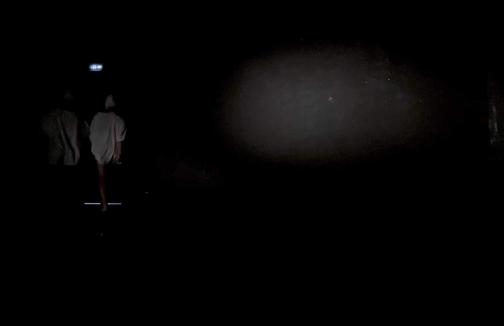
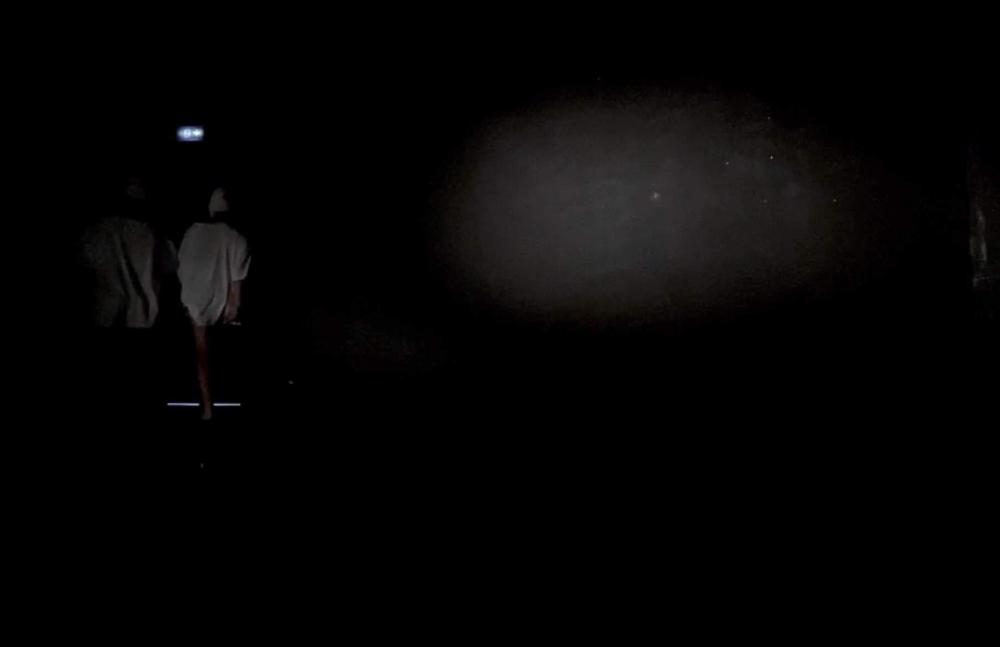

Portfolio
Par [Votre Nom]
Par [Votre Nom]
Tatoo Art,
Livre découpé, collage,
30 x 40 x 5 cm,
2024
Sans titre,
Livre découpé, collage,
30 x 40 x 5 cm,
2024

Sans titre,
Livre découpé, collage,
30 x 40 x 5 cm,
2024
Sans titre,
Livre découpé, collage,
30 x 40 x 5 cm,
2024
Langue plastique,
écriture collective
30 x 20 x 0.3 cm,
2022
Le corps chimérique
Dans le cadre du pôle Le Corps dans tous ses états, cette performance, créée après un workshop de deux jours sur le thème des corps chimériques, interroge la relation entre contrainte, dépendance et individualité. Nous avons choisi de lier nos deux corps par la taille, attachés par une corde, symbolisant une fusion imposée dès la naissance. Nos corps, entièrement recouverts de costumes sombres des pieds à la tête, perdent leur humanité pour devenir des formes anonymes et hybrides. Dans une atmosphère sombre et pesante, nous déambulons, nos mouvements entravés par cette corde. Ce lien, d'abord nécessaire à notre équilibre, devient progressivement une prison. La tension monte : le désir d'indépendance éclate. Mais lorsque les corps se libèrent, l'équilibre se brise. Isolés, incapables de survivre sans l'autre, les deux corps s'effondrent, incapables d'exister en autonomie. Cette performance met en lumière notre nature chimérique : des êtres à la fois fusionnels et tiraillés par un besoin d'indépendance, condamnés à chercher un équilibre entre lien et solitude, entre unité et fragmentation.


Le corps chimérique part2
Dans cette performance, deux corps sont liés par les avant-bras et masqués, créant un déséquilibre apparent. Dès le début, les mouvements sont hésitants et forcés, comme si la contrainte les poussait à s’adapter à une situation nouvelle. Au fur et à mesure, les corps apprennent à se synchroniser, cherchant à trouver un équilibre dans cette restriction. L’espace sombre, d’abord oppressant, devient progressivement plus accueillant à mesure que les corps se déplacent ensemble. Finalement, la lumière se fait, symbolisant l’atteinte de l’équilibre et de la réussite dans cette épreuve, marquée par la fluidité des mouvements et l’harmonie retrouvée. Le lien, au lieu de rester une contrainte, devient un élément de libération.
 

1 191 689
1 191 689 est une œuvre qui traduit une année complète de pas en une cartographie visuelle. Le titre correspond au nombre total de pas effectués durant l'année et chaque élément graphique reflète une partie de ce total. La structure est horizontale, chaque ligne représente une journée et les cercles se succèdent de gauche à droite, de minuit à 23h59. Le diamètre de chaque cercle est proportionnel au nombre de pas effectués pendant l’heure, traduisant l’intensité de l’activité par des variations de taille.
Chaque cercle a été dessiné un par un grâce à un codage minutieux, dans un processus répétitif. Une fois les journées complétées, un calque rassemble et superpose tous ces cercles dans une édition. Ce choix visuel mettant en lumière l’accumulation et la transparence. Cette superposition crée une image à la fois dense et légère, évoquant la fragilité du temps et des traces qu’il laisse.
À travers cette œuvre, le quotidien, souvent invisible, devient une représentation tangible et poétique. Ce projet interroge le passage du temps, la mémoire des gestes et la matérialité de nos mouvements, tout en explorant l’impact de la répétition et de l’accumulation sur notre perception.


WS création d'une tipographie
Affiche collective, 120x80cm
2024


Le projet "Mémoire en Suspension" examine le rapport au temps à travers les témoignages des habitants du quartier d'Encageante à Aix, dont les souvenirs sont liés à la démolition imminente de leur immeuble. Chaque boîte, représentant une discussion avec un habitant, contient des papiers recyclés symbolisant la fragilité de la mémoire et de l'instant. Ce travail aborde le temps à la fois comme un élément destructeur et un témoin, soulignant comment les événements marquants façonnent notre perception du passé et de l'avenir, tout en mettant en lumière la temporalité fragile des récits humains.
Mémoires en Suspension
papier recyclé, coutures
dimensions variables
2024
Exposition dans le cadre du pôle "l'appartement" à Encagnane, Aix-en-provence
Le poids des heures
Edition, 10x20x200cm,
2024
Le poids des heures est un livre de 6240 pages, où chaque page représente une heure, donc 260 jours complets du début de l'année scolaire jusqu'au diplôme
Pour ce livre, j'ai utilisé du papier de magazines publicitaires que j'avais à la maison, afin de symboliser les distractions incessantes et les flux d'informations, de publicités et de stimuli que nous subissons quotidiennement. Ce projet met en lumière l'encombrement constant de l'environnement, une forme de bruit visuel et mental. Ce bruit se superpose à notre perception du temps. C’est une réflexion sur comment ces parasites façonnent et perturbent notre quotidien.